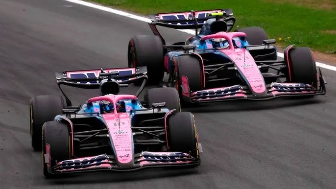

F1Motion
F1MotionEl piloto argentino tuvo una charla puertas adentro de Alpine
publicado por Tiago Monaco en Octubre de 2025

La desobediencia y la Fórmula 1 no hacen buena pareja. En la Argentina quedó marcado a fuego un ejemplo emblemático: Carlos Reutemann con Williams en la temporada 1981. Aquella rebeldía de Lole en el GP de Brasil ante la orden de dejar ganar a Alan Jones le terminaría costando carísimo al cierre del año. La ovación de la tribuna no hace mella en las oficinas de los equipos. Así funciona. Son contados los casos de insubordinados que no terminaron encerrados entre cuatro paredes escuchando una larga perorata. Franco Colapinto recibirá un tirón de orejas después del GP de Estados Unidos. El piloto argentino desobedeció abiertamente una orden directa del equipo Alpine en el final de la carrera, cuando decidió superar a Pierre Gasly, a pesar del mensaje que había recibido por radio. “Amigo, necesitamos que mantengan la posición”. La respuesta del argentino fue clara: “¡Qué! Va mucho más lento”. Tras eso, el bonaerense se tiró por adentro en la recta principal, con DRS abierto, y superó al francés en la primera curva. En los últimos giros del GP de Estados Unidos coincidió el mejor momento de Franco Colapinto con el peor de Pierre Gasly. En el contexto de Alpine, luchando en el fondo, el argentino había encontrado una ventana de rendimiento impensada con los neumáticos blandos y con su auto ya descargado de combustible. Fue el único momento del todo el fin de semana de Texas en el que el ex-Williams se sintió un poco más cómodo con su débil A525. Con mejores registros de vuelta, Colapinto se acercó claramente al francés y estaba todo dado para superarlo. Además, el auto 43 venía desde hacía varias vueltas presionado por el Sauber de Gabriel Bortoleto. Con respecto a la carrera, Colapinto explicó: “Luché con todo. Fue muy dura con la goma media. Cada vez que me pasaba un auto perdía mucha carga, sobrecalentaba las gomas. Cuando cambié las gomas y puse blandas fue un poco mejor, de golpe el auto es como que volvió a estar un poquito más vivo, tenía el ritmo del Racing Bulls de Hadjar de adelante, iba más rápido que Pierre, así que volví a encontrar un poquito más el ritmo y a estar un poco más cómodo con el auto. Fue un día para aprender. Creo que como equipo nos costó mucho este fin de semana, con el calor y los baches, así que a trabajar para México. Ojalá sea un fin de semana un poco mejor”.

Franco Colapinto: "No tiene sentido pelear por estas cosas"El argentino habló después de la carrera sobre su decisión de superar a Pierre Gasly, a pesar de la orden recibida.
Volver atras